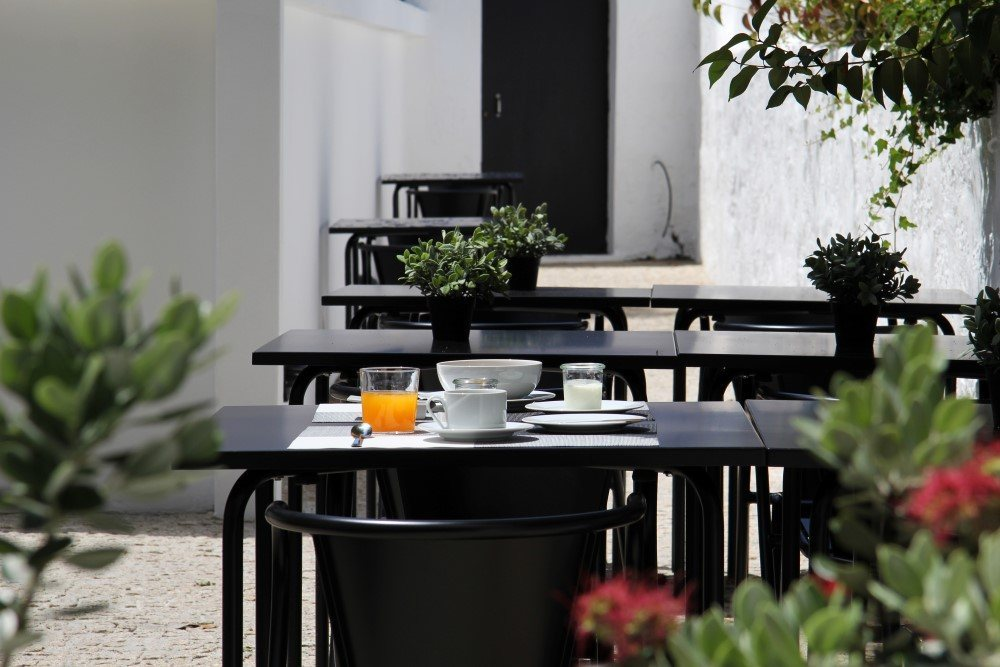
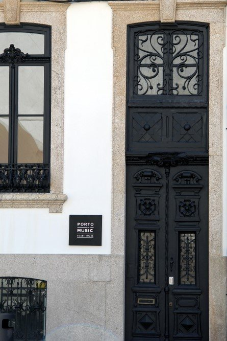
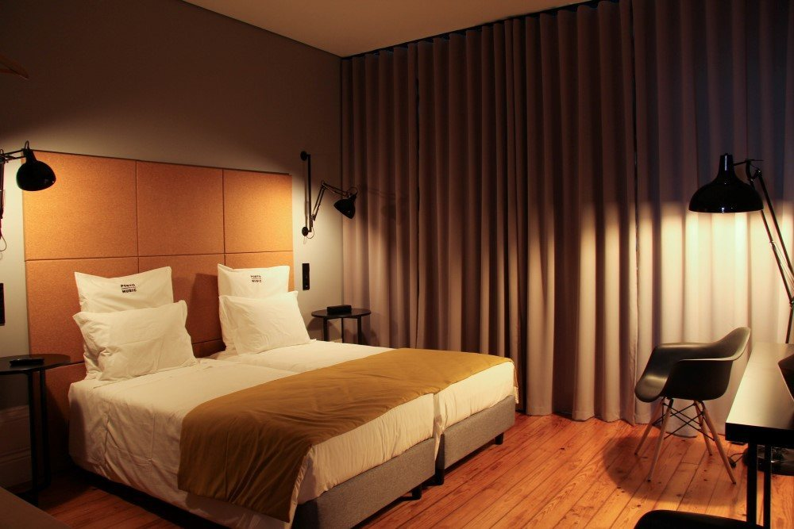
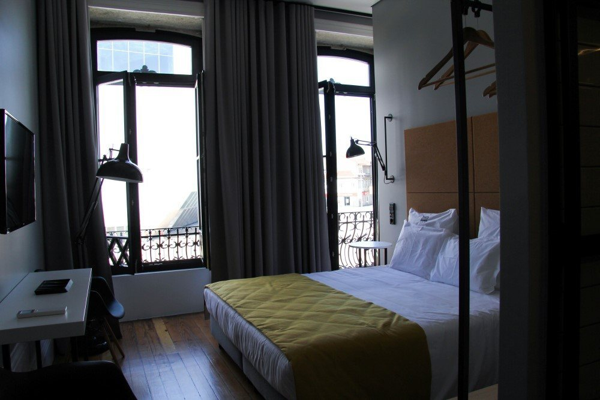
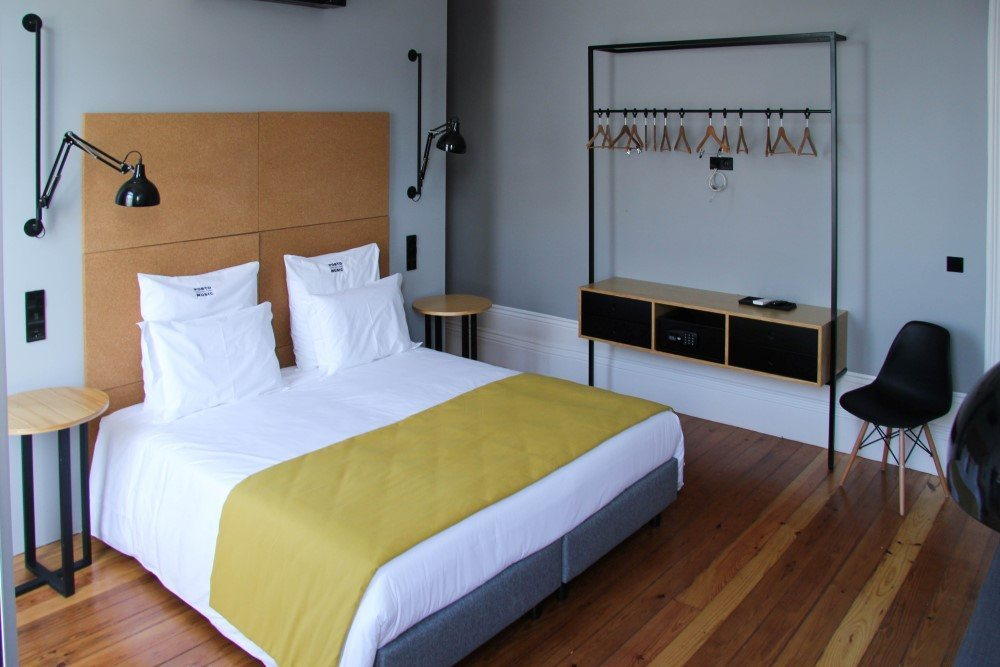
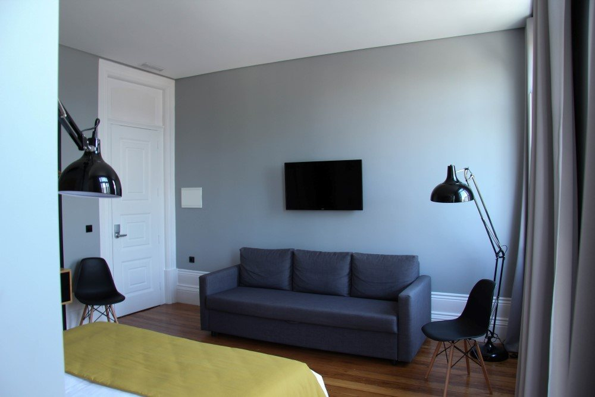
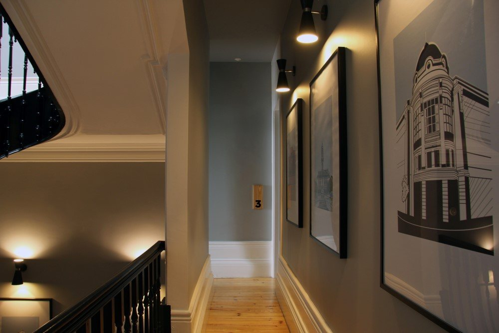
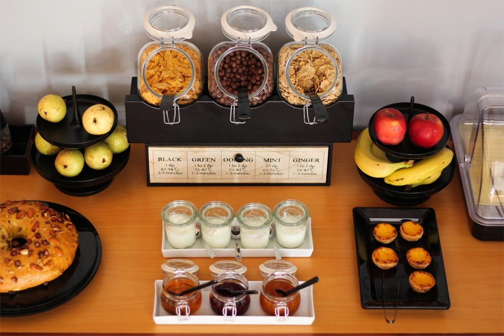
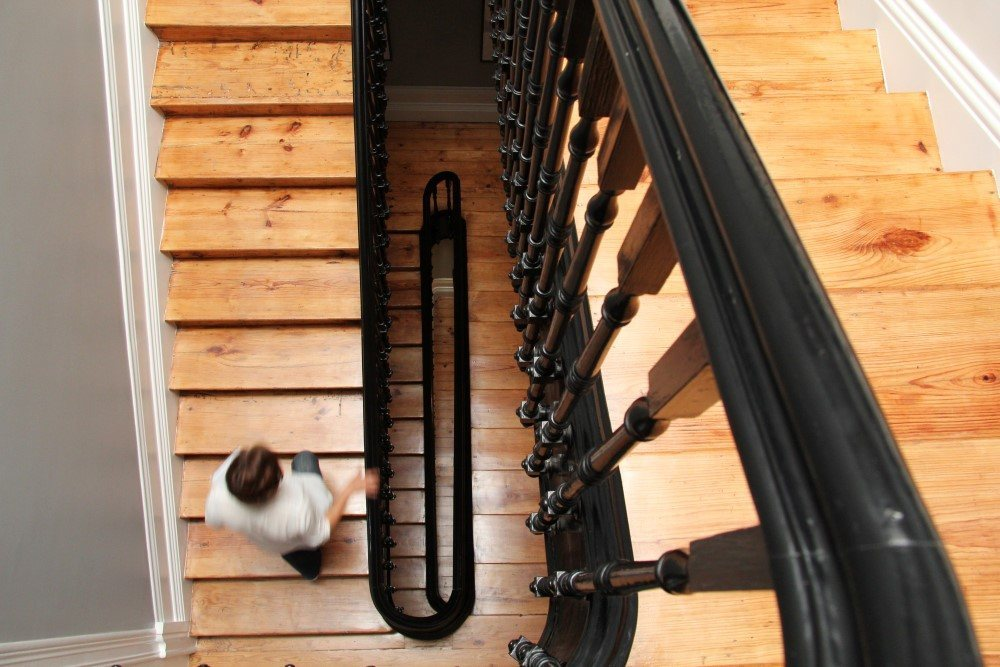
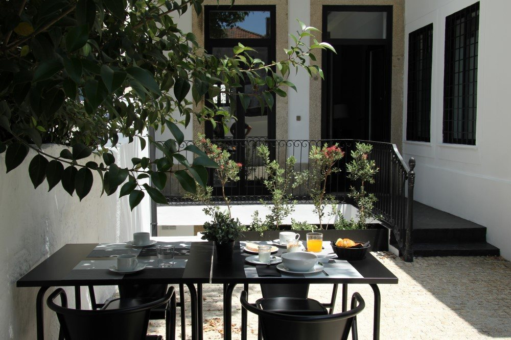

Standard Double / Twin
Double bed or two singles · air conditioning · private shower · Wi-Fi · 40″ TV · safe · hair dryer.

A restored century-old Porto house with seven rooms, thoughtful design and Casa da Música directly across the avenue.
Porto Music Guest House occupies a traditional century-old house on Avenida da Boavista. The building was restored for hospitality while preserving architectural character, then paired with a clean, contemporary interior.

The categories below come from Porto Music Guest House’s current official website. Property images are presented as a separate room gallery so the concept does not imply an unverified category-to-photo match.
Double bed or two singles · air conditioning · private shower · Wi-Fi · 40″ TV · safe · hair dryer.
Double or twin setup · private shower · kitchenette with minibar, microwave, kettle and coffee machine.
Double or twin setup · extra bed possible · private shower · kitchenette · 40″ TV.
Double bed · extra bed possible · full kitchen · private bathroom · balcony overlooking Casa da Música.






The guesthouse pairs its small scale with a more personal morning experience: breakfast inside the restored house or around the garden and courtyard spaces.


The stair, moldings, proportions and small courtyard give Porto Music a stronger identity than a conventional hotel room. The direct website should sell that character instead of burying it under long blocks of text.
The property sits on Avenida da Boavista, directly opposite Casa da Música and close to Boavista Roundabout, Mercado do Bom Sucesso and metro connections into the historic centre.
Avenida da Boavista 601
4100-127 Porto, Portugal
48323/AL